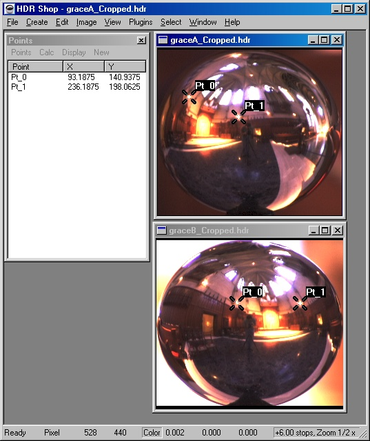
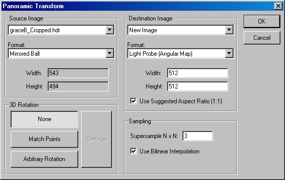
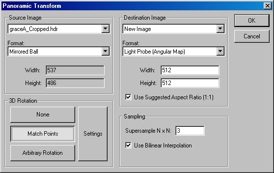
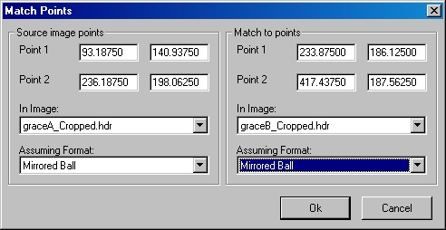
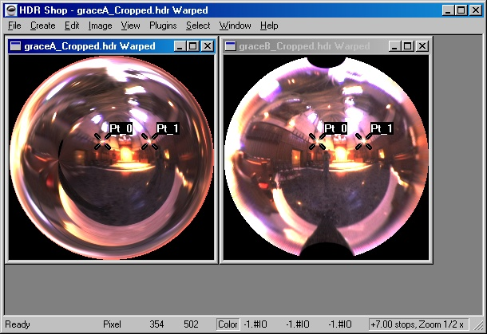
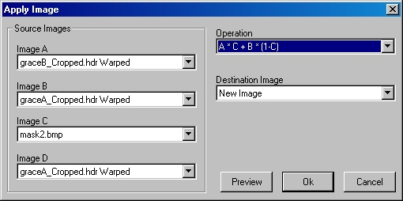

“Light Probe”とは、全方位（360°パノラマ）の、HDRI (high-dynamic range image)のことです。Light
probeでは全ての方角を見渡すことができ、また実際の光源レベルを記録できるので、入射照明の測定に役立ちます。このため、レンダリングされた画像に、現実的な照明環境や背景光を提供することが可能です。
このチュートリアルでは、HDR
Shopを使ったlight probeの作成方法を紹介します。全般的に、以下のようなステップを踏んでいきます。
適切なlight probe画像を得る方法としては、McMaster-Carr社のPrecision Grade
Chrome Steel Ballsのようなミラーコーティングされた球体 (mirrored sphere)を使用して、画像撮影を行うことが挙げられます。手元にあるカメラが正投影(orthogonal)と仮定すると、理論的には１枚のミラー・ボールの写真で、全ての方角を「見る」ことができるといえます。つまり、ミラー・ボールの側から見えるあらゆる物は、ボールに鏡映されるので、カメラ側で見ることができるといえるでしょう。
残念ながら、ボールの縁に鏡映された物は、極端に伸びたり、歪んだりしてしまうため、unwarpした際に質の悪い画像となってしまいます。さらに、ボールの中心では、撮影に使われたカメラが映りこむため、その背景は不明瞭になるでしょう。
こうした問題点を軽減するためには、異なる角度（または、方向）から球体の写真を２枚撮影し、それらをブレンドすることで、映りこんだカメラと歪んだ領域を取り除く必要があります。
上で述べたような、ミラー・ボールにおける問題の２箇所は、カメラに直接向かっている点（訳注：球体の中心）と、カメラから離れている部分（訳注：球体の端）のため、２枚の写真はそれぞれから90°離れた位置から撮影されるべきです（図を参照）。この方法では、不適切なサンプリングの領域と、カメラが妨害している部分は、２つの画像上では異なる箇所に位置することになります。（ボールの反対側からの撮影は、片方の画像の不適切なサンプリング領域と、もう１枚の画像におけるカメラの位置と同じになってしまうため、うまくいかないということに注意してください。逆もまた然り）。
以下のような、対の(HDRの)画像を撮影してください：
サンプル画像が必要な場合、次のサイトから取得してください：graceA.hdr,
graceB.hdr
上級者の方へ： ミラー・ボールの上下が少し見切れて撮影されても大丈夫です。これらの箇所は、他の写真から復元することが可能です。
HDRShopでは、画像をより良いパノラマ・フォーマットにするために、これらの画像をwarpする機能や、方位を合わせるために、これらの画像を3次元的ににrotateする機能が用意されています。
次のステップでは、ミラー・ボールの最端まで、イメージを切り抜きます。
はじめに、
“Circle”オプションがチェックされているか確認してください。 “Select”メニューから、“Draw
Options”を選択することで見つけられます。“Circle”オプションにチェックを入れることで、選択された長方形の枠に内接する楕円を描くことができます。この機能は、選択範囲とミラー・ボールの端を一致させる際に役立ちます。
もし、ミラー・ボールが写真の端の方へ移動してしまっていたら、“Restrict Selection to Image”オプションがチェックされていないことを確認してください。このオプションは、
“Select”メニューから、“Options”をたどることで見つかります。チェックを外すことで、画像の境界を越えた領域を選択することが可能になります。
ミラー・ボール周囲の領域を選択し、ボールの端の境界の辺りまで円を調整してください。以下の画像のような状態が望ましいです。
この作業を終えたら、
“Image”メニューから、“Crop”コマンドを用いて画像を切り取ってください。
切り抜くと、次のような２つの画像ができるはずです。
ここで、保存しておきましょう。（“File”から、“Save As.....”）。オリジナルの画像を上書きしないようにしてください。
２つの画像を一致させるために、両者間が何度離れているかを求める必要があります。HDR Shopはこの作業をほぼ自動的に行いますが、そのためにはそれぞれのミラー・ボール画像における対応する２点の座標値（画像内で結びつく、同じ特徴）をHDR
Shopに知らせる必要があります。
これらの座標値を得るには、“Window”メニュー以下の、“Point Editor”を利用するのが最も簡単な方法であるといえます（パノラマ変換のウィンドウがまだ開いていたら、終了させてください）。“Point
Editor”ウィンドウが開いたら、画像上でCtrlキーとマウスクリックを行うことで、画像上に新しい点(point)を作成します。また、既存の点をドラッグして利用することもできます。今回の場合は、各イメージに２つずつの、同等の特徴をもつ点(point)が必要になります。下記に示した例では、上部にある２つの光源をpointとして選択しています。
ｓ
現行のHDRShopでは、これらの座標値を書き留めておく必要があります（将来的には、直接、pointを使えるようになります）。今回の例における座標値は以下の通りです：
|
|
X |
Y |
|
Image
A: |
93.18750 |
140.93750 |
|
|
236.18750 |
198.06250 |
|
Image B: |
233.87500 |
186.12500 |
|
|
417.43750 |
187.56250 |
これで、画像をlight probe (アンギュラ・マップ:angular
map)パノラマ・フォーマットにwarpするのと同時に、それらパノラマ画像の方位（もしくは、位置）を合わせる3DのRotation 機能を適用する準備が整いました。
パノラマ変換コマンドを用います。 “Image”メニュー下の“Panorama”から、“PanoramicTransformations..”を選びます。

“Source Image”は、warpする元画像になります。“Destination
Image”は、“New Image”のままでよいです。“Source Image”の“Format”は“Mirrored Ball”になります。また、“Destination
Image”の“Format”は、“Light Probe (Angular Map) Format”となります。“Destination Image”の解像度は変更することができます。また、よりよい品質の画像を望むのであれば、“Supersample”の値を増加します。
今回は、画像Bをrotation無しでwarpさせ、画像Bに対して画像Aが一致するように、画像Aをrotateし、warpさせます。このため、画像Bを“Source
Image”として選択します。“3D Rotation”では“None””を選択し、“OK”ボタンをクリックしてください。これによって、warpしたバージョンの画像Bが生成されます。
ここで、パノラマ変換ダイアログに戻ります。画像Aに対しても、先ほどと同様の作業を行います。今回は“3D
Rotation””以下から、“Match Points”を選択します。

“Setting”をクリックし、先ほど書き留めておいたpointの座標値を入力します。

今回のケースでは、画像Bに一致させるために画像Aをrotateさせます。
全てのフィールドが正しく満たされたら、“Match
Points”と“Panoramic Transform”の両方で“OK”をクリックします。この時点で次のような、light-probeフォーマットの、２つのパノラマ画像を得ているはずです。

画面上の“point（点）”を消去することが可能です。消去するには、“delete”キーを用いるか、“Points”ウィンドウの
“Display”メニューから、“Show Points”の選択を解除します。
最後のステップでは、画像をひとつにマージします。このために、“mask（マスク）”が必要になります。maskとは、画像Aを用いたい箇所のピクセルが０、画像Bを用いたい箇所のピクセルが１、そしてこれらをブレンドしたい箇所では中間の値となる画像のことです。種類を問わず、ペイントプログラムを使えばmaskの作成はできますが、Adobe
Photoshopを用いることで、この作業はずっと簡単になります。
Photoshopに慣れ親しんでいるのであれば、作成したパノラマ画像をJPEGで保存し、Photoshopでロードしてください。一方のパノラマ画像をもう一方の画像より上のレイヤーとしてコピー＆ペーストし、そこにmaskをかけることができます。この方法を用いると、maskを色づけした場合、その結果を視覚的にみてとることができます。Photoshopをもっていなければ、自分でmaskを描いてみてください。うまくできたら、maskをWindows
BMP、TIFF、またはHDR Shopがサポートするその他の非圧縮フォーマットで保存してください。
完成したmaskは以下のようになるでしょう：
このmaskは、mask2.bmpからダウンロードできます。
次に、maskをHDR Shopにロードしてください。Maskによって２つのパノラマ画像をマージさせるには、 “Image”メニューから “Calculate”を選択し、値を選択してください。

この例では、maskを使って画像Bと画像Aのアルファブレンド(alpha
blend)を行っています。
lightprobeの完成形ができました！２つのカメラと、不適切なサンプリング領域が取り除かれ、照明環境として使う準備が整っています。
{kind=link}
{kind=link}
{kind=link}
{kind=link}
{kind=link}
{kind=link}
{kind=link}
{kind=link}